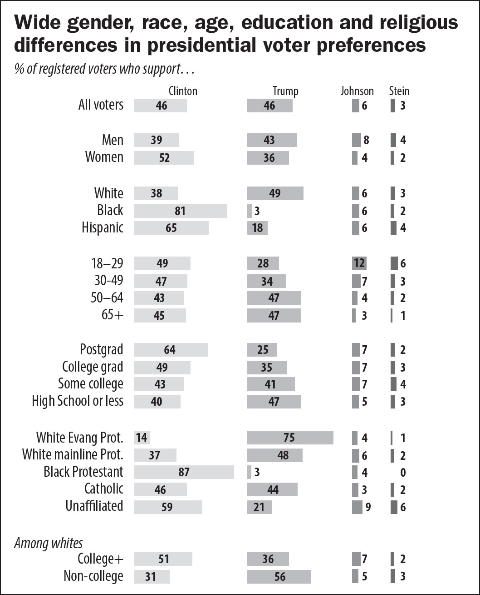
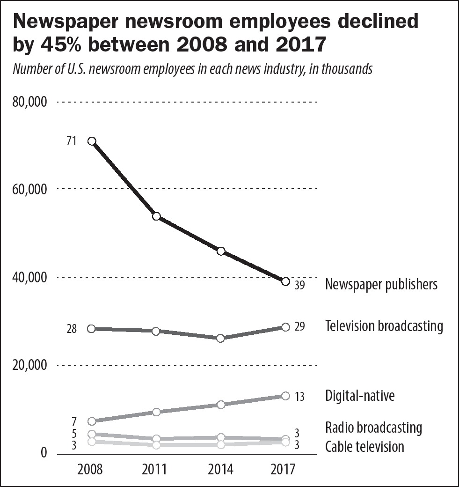
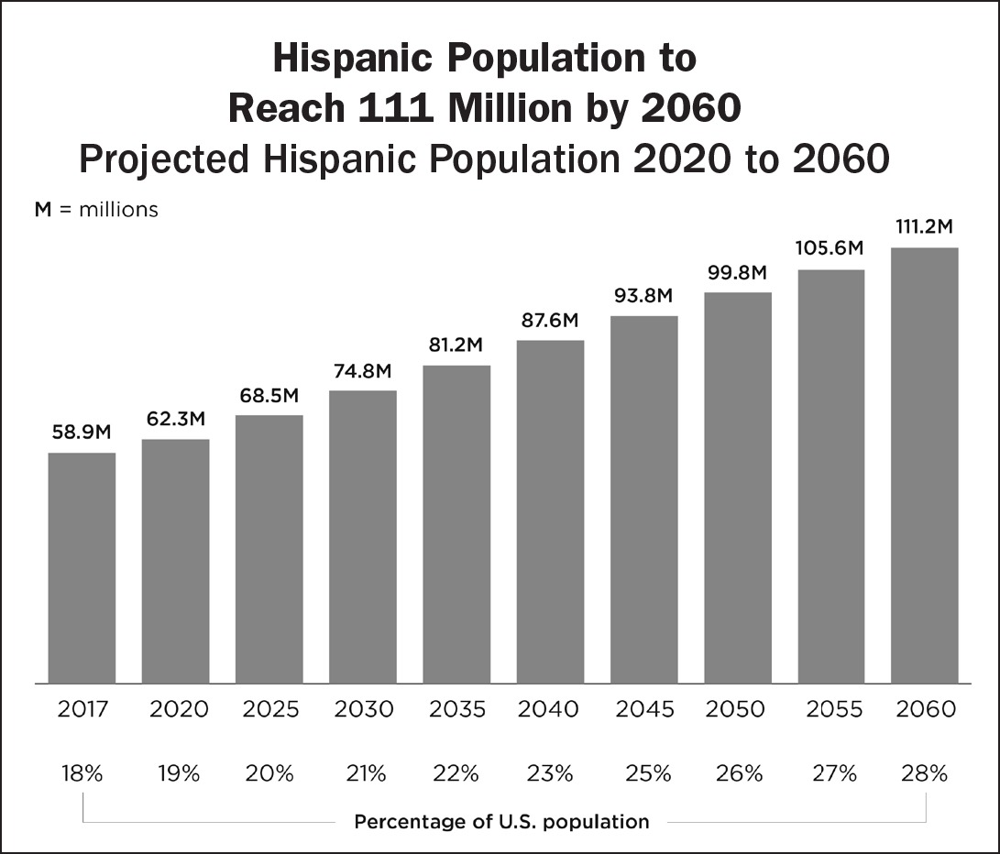
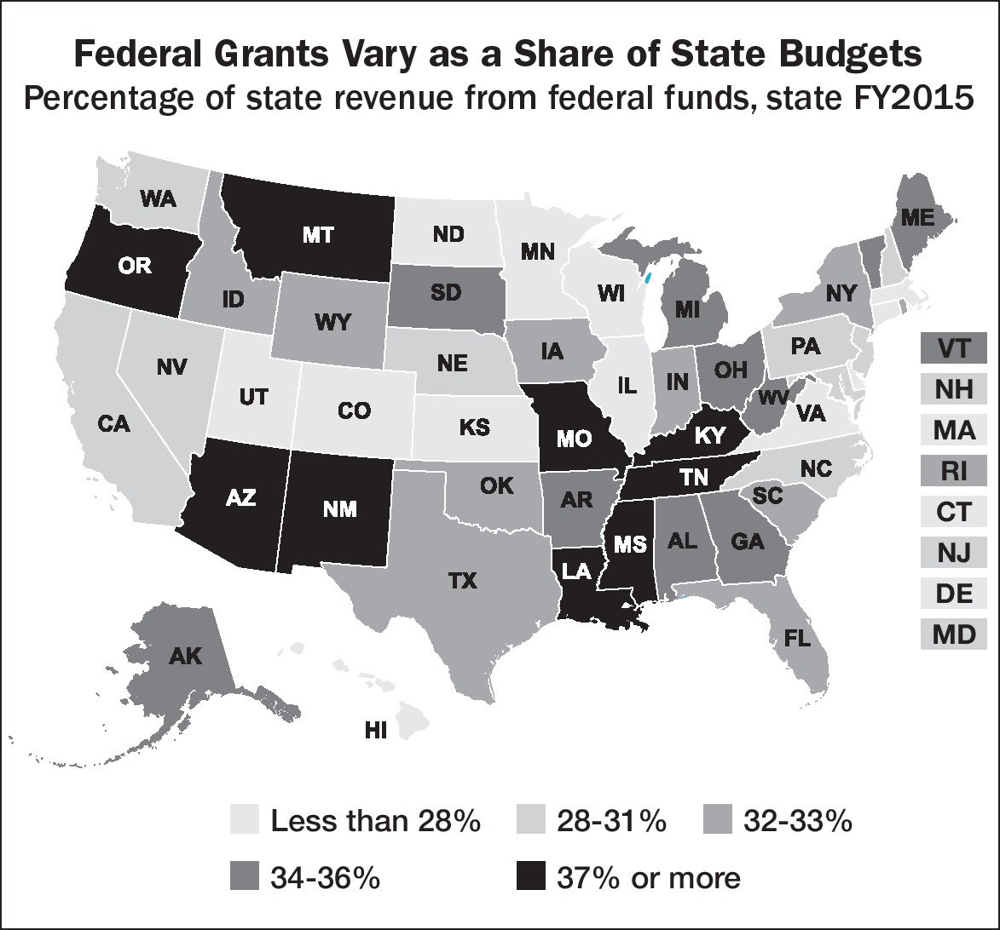
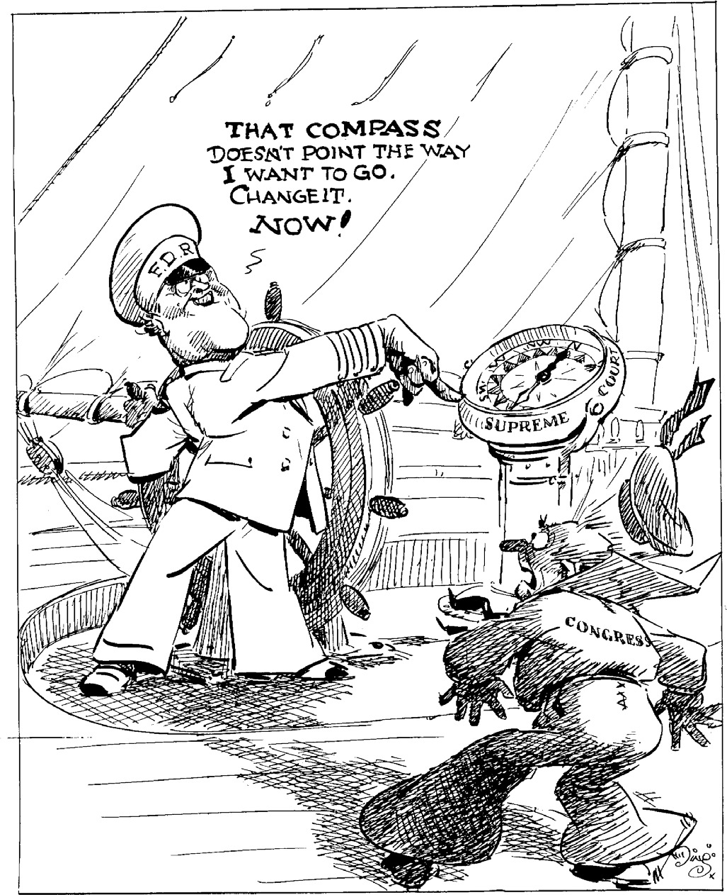

Chapter 20
Practice Multiple-Choice Questions
Practice with the following AP®-style questions. Then go online to access a timed, full-length practice exam at www.rea.com/studycenter.
Questions 1 and 2 are sample knowledge-based items.
1.In a civilized society, citizens agree to give up or limit certain freedoms and empower a government to make rules to govern them in exchange for a level of security. The people may dismantle a government that does not respect their natural rights. Which of the following terms is the most accurate label for this idea?
(A)limited government
(B)social contract
(C)popular sovereignty
(D)republicanism
2.Which of the following serves as the basis for the implied powers of Congress?
(A)the Establishment Clause
(B)the Full Faith and Credit Clause
(C)the Commerce Clause
(D)the Necessary and Proper Clause
Questions 3–6 are sample comparison-based items.
3.Which of the following pairs accurately represents views likely to be held by a liberal and views likely to be held by a conservative?
| Liberal | Conservative | |
| (A) | supports extensive regulation of business to protect consumers | supports extensive regulation of industry to combat climate change |
| (B) | supports reduced taxation on wealthy individuals and corporations to stimulate economic growth | supports increased taxation on wealthy individuals and corporations and funding of social welfare programs |
| (C) | supports increased education spending | opposes federal regulation of public education |
| (D) | supports death penalty | opposes death penalty |
4.Which of the following is an accurate comparison of the constitutional powers of the House of Representatives and the Senate?
| House of Representatives | Senate | |
| (A) | confirms ambassadors | confirms federal judicial nominees |
| (B) | originates all revenue bills | brings charges of impeachment |
| (C) | limits debate by issuing rules | limits debate with a filibuster |
| (D) | determines the president if no candidate receives a majority of the electoral votes | determines the vice president if no candidate receives a majority of the electoral votes |
5.Which of the following is an accurate comparison of reapportionment and redistricting?
| Reapportionment | Redistricting | |
| (A) | conducted by the federal government | conducted by state governments |
| (B) | increases or decreases a state’s total number of senators | increases or decreases a state’s total number of electoral votes |
| (C) | conducted every ten years based on census data | conducted biannually based on population shifts within states |
| (D) | often involves gerrymandering by state legislatures | is determined by the Census Bureau |
6.Which of the following is an accurate comparison of the two court cases?
| Schenck v. United States (1919) | New York Times Co. v. United States (1971) | |
| (A) | established the clear and present danger test | prohibited prior restraint of the press in most cases |
| (B) | upheld defendants’ prison sentences for encouraging others to resist the military draft | upheld prison sentence of congressional staffer who leaked the Pentagon Papers to the press |
| (C) | declared the Espionage Act unconstitutional | upheld prior restraint of the press in most cases |
| (D) | established First Amendment protections for symbolic speech | declared the Espionage Act unconstitutional |
Questions 7–12 are sample quantitative analysis items.
QUESTIONS 7 AND 8 REFER TO THE GRAPH.

Source: Pew Research Center, October 2016
7.According to the data set, which of the following is the strongest demographic indicator of support for Clinton?
(A)being a woman
(B)being black
(C)being 18–29 years old
(D)having a postgraduate education
8.In the 2016 election, two minor party candidates drew a measurable percentage of the vote, Jill Stein, who ran as the Green Party candidate, and Gary Johnson, who ran as a Libertarian. Considering how minor parties can affect presidential election outcomes, which of the following statements is true?
(A)Stein’s candidacy most likely aided Clinton by drawing voters who would otherwise have voted for Trump.
(B)Stein’s candidacy most likely aided Trump by drawing voters who would otherwise have voted for Clinton.
(C)Johnson’s candidacy most likely aided Trump by drawing voters who would otherwise have voted for Clinton.
(D)Neither minor party candidate drew enough voters to impact the outcome of the election.
QUESTIONS 9 AND 10 REFER TO THE GRAPH.

Source: Pew Research Center
9.Which of the following statements accurately describes a trend in the data set on the previous page?
(A)Newspaper publishers are the only industry to show an overall decline in newsroom employees from 2008 to 2017.
(B)The newspaper industry employed more newsroom employees in 2017 than any other news industry.
(C)Newspaper newsroom employees have declined significantly since 2008 while the numbers of newsroom employees in other industries have grown overall.
(D)Television broadcasting showed the greatest increase in newsroom employees from 2008 to 2017.
10.Given what you know about changes in the news media in recent decades, which of the following statements might accurately explain the changes in newsroom employee numbers presented in the data?
(A)Newspaper subscriptions have declined as news consumers have gained access to increasing numbers of free or low-cost online sources of news.
(B)Increases in newsroom hiring in the television and digital media industries have created increasing demand for newsroom employees overall.
(C)Growth in radio broadcasting has allowed the industry to offer newsroom employees higher salaries, drawing employees away from other news industries.
(D)Advertising revenues have increased for cable news and radio broadcasting, while declining for newspapers.
QUESTIONS 11 AND 12 REFER TO THE GRAPH.

Source: U.S. Census Bureau, 2017
11.By what year will Hispanics reach one-quarter of the United States population?
(A)2025
(B)2040
(C)2045
(D)2050
12.Based on your understanding of demographics and politics, which of the following conclusions is true?
(A)Because large numbers of Hispanic voters tend to favor Republican candidates and policies, Republicans are likely to gain political power.
(B)Because large numbers of Hispanic voters tend to favor Democratic candidates and policies, Democrats are likely to gain political power.
(C)Because the Hispanic population is diverse in their political views and party affiliations, the growing Hispanic demographic is unlikely to significantly affect partisan politics.
(D)Democratic politicians should discontinue support for immigration reform measures and the DREAM Act, which are opposed by most Hispanic voters.
Questions 13–18 are sample text-based analysis items.
QUESTIONS 13–15 REFER TO THE PASSAGE.
In 1984, Congress passed the National Minimum Drinking Age Act requiring the Secretary of Transportation to withhold 5 percent of federal highway funds from states that did not adopt a 21-year-old minimum drinking age. South Dakota, a state that permitted persons 19 years of age to purchase alcohol, challenged the law, arguing that regulation of alcohol sales is an exclusive power of state government. The Supreme Court held that the threat of withholding funds as an inducement to comply with a federally promoted policy is constitutional.
The Court stated:
The Constitution empowers Congress to “lay and collect Taxes, Duties, Imposts, and Excises, to pay the Debts and provide for the common Defense and general Welfare of the United States.” Art. I, 8, cl. 1.Incident to this power, Congress may attach conditions on the receipt of federal funds, and has repeatedly employed the power “to further broad policy objectives by conditioning receipt of federal moneys upon compliance by the recipient with federal statutory and administrative directives.” . . .
Here Congress has offered relatively mild encouragement to the States to enact higher minimum drinking ages than they would otherwise choose. But the enactment of such laws remains the prerogative of the States not merely in theory but in fact. Even if Congress might lack the power to impose a national minimum drinking age directly, we conclude that encouragement to state action found in 158 is a valid use of the spending power.
— South Dakota v. Dole (1987) Majority Opinion
13.Which of the following enumerated powers of Congress allowed the Supreme Court to side with the federal government in the case of South Dakota v. Dole according to the majority opinion?
(A)Supremacy Clause
(B)Commerce Clause
(C)Tax and spend money
(D)Standards of weights and measures
14.In which of the following court cases did the Supreme Court decide a case in the opposite manner by upholding the rights of states in balancing power between the national and state governments?
(A)McCulloch v. Maryland (1819)
(B)Tinker v. Des Moines (1969)
(C)Marbury v. Madison (1803)
(D)United States v. Lopez (1995)
15.In South Dakota v. Dole, the Court upheld a requirement placed on the states by the federal government. Which of the following terms best describes the federal requirement that states comply with federal drinking age policy?
(A)dual federalism
(B)devolution
(C)eminent domain
(D)a mandate
QUESTIONS 16 AND 17 REFER TO THE PASSAGE.
Independent of the opinions of many great authors, that a free elective government cannot be extended over large territories, a few reflections must evince, that one government and general legislation alone never can extend equal benefits to all parts of the United States: Different laws, customs, and opinions exist in the different states, which by a uniform system of laws would be unreasonably invaded. The United States contain about a million of square miles, and in half a century will, probably, contain ten millions of people; and from the center to the extremes is about 800 miles.
Before we do away the state governments or adopt measures that will tend to abolish them, and to consolidate the states into one entire government several principles should be considered, and facts ascertained:—These, and my examination into the essential parts of the proposed plan, I shall pursue in my next.
—Letters from the Federal Farmer No. 1
16.Which of the following statements best summarizes the author’s argument?
(A)Removing the authority of the state governments would make them vulnerable to invasion.
(B)The United States is too large of a territory to be governed by a federal government because standard national laws would intrude on the rights of states to protect different traditions.
(C)Large centralized governments are the most effective way to eliminate factions and protect personal liberties.
(D)State government should be eliminated, and a unitary system of government established because federalism cannot succeed in the real world where states will be in conflict with each other.
17.In which of the following documents does the author make an argument that is most similar to the one presented in Letters from the Federal Farmer No. 1?
(A)Federalist No. 10
(B)Declaration of Independence
(C)Brutus No. 1
(D)Federalist No. 51
QUESTION 18 REFERS TO THE PASSAGE.
In the case of Reed v. Reed (1971), the Supreme Court struck down an Idaho law giving preference to males over females in selecting the administrator of a deceased person’s estate (the person responsible for overseeing the belongings of the person who has died).
The Court stated:
In applying that clause, this Court has consistently recognized that the Fourteenth Amendment does not deny to States the power to treat different classes of persons in different ways . . . [T]hat amendment does, however, deny to States the power to legislate that different treatment be accorded to persons placed by a statute into different classes on the basis of criteria wholly unrelated to the objective of that statute. A classification “must be reasonable, not arbitrary, and must rest upon some ground of difference having a fair and substantial relation to the object of the legislation, so that all persons similarly circumstanced shall be treated alike.” The question presented by this case, then, is whether a difference in the sex of competing applicants for letters of administration bears a rational relationship to a state objective.
—Reed v. Reed (1971) Majority Opinion
18.Based on the above excerpt and your existing knowledge, upon which constitutional clause was the Court relying in its decision to prohibit sex-based discrimination in this case?
(A)The Supremacy Clause
(B)The Full Faith and Credit Clause
(C)The Equal Protection Clause
(D)The Due Process Clause
Questions 19–22 are sample visual analysis items.
QUESTIONS 19 AND 20 REFER TO THE MAP.

19.Which of the following state pairs represent the highest and lowest groups of federal aid as a percentage of the state budget, respectively?
(A)Minnesota, Georgia
(B)Montana, North Carolina
(C)Texas, California
(D)Kentucky, Illinois
20.Which of the following statements is accurate based on the data in the graphic?
(A)Federal aid generally composes a larger share of the budget for coastal states than for interior states.
(B)Federal aid generally composes a larger share of the budget for southern states than for northern states.
(C)States that rely more and less heavily on federal aid are distributed evenly throughout all geographic regions.
(D)States that rely more heavily on federal aid generally do so as a result of natural disasters.
QUESTIONS 21 AND 22 REFER TO THE CARTOON.

Courtesy of the Jay N. ‘Ding’ Darling Wildlife Society
21.Franklin Roosevelt’s early attempts to enact New Deal legislation were consistently struck down by the Supreme Court as exceeding Congress’s constitutional powers. Roosevelt responded by proposing a plan to “pack the Court” by increasing the number of Supreme Court justices, which would allow him to nominate friendly judges who would be approved by a friendly Senate. Which presidential power allowed FDR to propose this plan?
(A)the power to change the jurisdiction of the Supreme Court
(B)the power to change the number of judges on the Supreme Court
(C)the power to make recess appointments
(D)the power to recommend legislation
22.Which of the following statements best describes the message of the cartoon?
(A)The president is the captain of the ship, a trustworthy person, and has the moral and constitutional authority to control the Court.
(B)The president does not have the constitutional power to change the direction of the Court, which is required to keep the country headed in the right direction.
(C)It is the duty of Congress to support the president, and his agenda must be supported by all three branches.
(D)Congress is a powerful co-equal branch of government and unafraid to stand up to his agenda, which is an abuse of power.
Questions 23–25 are sample concept application items.
23.Which of the following is an example of judicial review?
(A)The Supreme Court hears a case to determine whether an environmental regulation applies to a specific category of manufacturers.
(B)State police agencies review the performance of criminal court judges.
(C)A federal district court in Texas strikes down parts of the Affordable Care Act as unconstitutional.
(D)The Senate conducts confirmation hearings to determine the fitness of a presidential nominee to the Supreme Court.
24.In Riley v. California (2014), the Supreme Court unanimously held that the warrantless search of a cell phone was unconstitutional. Which constitutional amendment protects the right violated by the search?
(A)First Amendment
(B)Fourth Amendment
(C)Fifth Amendment
(D)Sixth Amendment
25.Which of the following options would be a tool available to the president to ensure that an independent agency is effectively carrying out its mandate?
(A)appoint the head of the agency
(B)solicit opinions from interest groups for use in formulating regulations
(C)fire and replace a large percentage of lower-level agency employees
(D)perform oversight by conducting public hearings
ANSWER EXPLANATIONS
1.(B) is correct. The idea of the social contract, proposed by John Locke, is foundational to the Declaration of Independence and the American Revolution itself. It is a concept you should be able to name and define. This question may challenge you because limited government (A) and popular sovereignty (C) both also relate to the broader ideas of democracy. Republicanism (D) is incorrect because it involves the unrelated principle of representative government. Answer (B) is the best choice because the statement provided is the definition of a social contract.
2.(D) is correct. Answers (A) and (B) are clearly wrong. The Establishment Clause (A) is the First Amendment clause that requires the separation of church and state. The Full Faith and Credit Clause (B), found in Article IV, requires that states respect official records and decisions of other states. The Commerce Clause (C) is more challenging. The Commerce Clause has been interpreted very broadly, and forms the basis for more implied powers than any other power of Congress. Choice (D), however, the Necessary and Proper Clause, actually grants Congress the authority to exercise powers that are implied and not specifically expressed in the Constitution.
3.The correct answer is Choice (C) because both corresponding statements are correct. Choice (A) is incorrect because the second statement is false. Conservatives generally do not support increased regulation of industry. Choice (B) is incorrect because the liberal-side statement describes supply-side economics, a theory that is generally supported by conservatives. The conservative-side statement is also false; conservatives do not favor increased taxation or support the expansion of social welfare programs. Choice (D) is incorrect because the liberal and conservative positions are reversed. Liberals are more likely to oppose the death penalty, while conservatives generally favor it.
4.The correct answer is (D). Remember that both parts of the answer must be correct for the answer to be correct. Choice (A) is incorrect as to the House (the Senate confirms ambassadors), but correct as to the Senate. Choice (B) is correct as to the House, but incorrect as to the Senate (the House brings impeachment charges). Choice (C) is incorrect because neither the practice of issuing rules for bills in the House, nor the filibuster in the Senate are constitutional powers. The question asks you to compare the constitutional powers of the House and Senate. This is a very difficult question. (Sorry!) Remember to carefully read the question. If you find yourself trying to decide between two answers that both seem correct, go back and read the full question (RTFQ).
5.The correct answer is (A) because both corresponding statements are true. Choice (B) is incorrect because both statements are false. Reapportionment impacts representation in the House, and redistricting, the redrawing of district boundaries within a state, does not change the number of House seats or electoral votes. Choice (C) is incorrect because the redistricting statement is false. Redistricting occurs every ten years as a result of reapportionment. Choice (D) is incorrect because both parts are false. Gerrymandering is related to redistricting; the Census Bureau conducts the census and reapportions, but does not redistrict. Redistricting is carried out by the states and the Census Bureau is a federal agency.
6.The correct answer is (A) because both corresponding statements are true. Choice (B) is incorrect because the second statement is false. The New York Times case did not involve criminal charges, and no one was imprisoned. Choice (C) is incorrect because both parts are false. The Espionage Act was not declared unconstitutional, and prior restraint of the press was rejected. Choice (D) is incorrect because both parts are false. Schenck did not involve symbolic speech and, again, the Espionage Act was not declared unconstitutional.
7.The correct answer is (B). Black voters preferred Clinton by a margin of 81 to 3 percent, a far greater difference than the other three possible demographics: women voted for Clinton by a margin of 52 to 36 percent; 18- to 29-year-olds preferred Clinton by a margin of 49 to 28 percent; and postgraduates (more than a 4-year college degree) preferred Clinton by a margin of 64 to 25 percent.
8.The correct answer is (B) the 3 percent of the voters who supported the Green Party candidate Jill Stein took votes away from the Democratic candidate, Clinton, thus aiding the Republican candidate, Trump. Choice (A) is incorrect because voters who supported the Green Party candidate, Stein would have been more likely to support the Democratic candidate Clinton and not likely to support the Republican candidate Trump. Choice (C) is incorrect because voters who supported the Libertarian Party candidate, Johnson, would have been more likely to support the Republican candidate, Trump. Choice (D) is incorrect because the Libertarian and Green candidates received 6 and 3 percent of the vote, respectively. Either of these percentages could affect the outcome of the election since a very small percentage of votes could determine the winners of significant numbers of electoral votes and be determinative of the winner.
9.The correct answer is (C). Newspaper newsroom employees have declined significantly. The number of newsroom employees in most other industries has grown modestly, and their collective number overall has increased. Choice (A) is incorrect because radio broadcasting also showed an overall (small) decline. Choice (B) is incorrect because, although the statement is true, it describes a data point and not a trend. (RTFQ). Choice (D) is incorrect. Television broadcast news employees increased by only 1,000. Digital-native news employees increased by 6,000, the largest numeric and percentage increase shown in the data.
10.The correct answer is (A). Choice (B) is incorrect because newspapers have lost 32,000 newsroom employees, while television and digital-native media combined have increased by 7,000. Demand cannot explain the loss of the other 25,000 employees. Choice (C) is incorrect. Radio broadcasting has not shown growth in market share, and the data does not indicate an increase in newsroom employees. Choice (D) is incorrect because there is no evidence in the data set regarding revenues.
11.The correct answer is (C). While the Hispanic population may grow to 25% sometime between 2040 and 2045, according to the data it cannot be concluded that it will happen before 2045.
12.The correct answer is (B) because as a group, Hispanic voters tend to support Democratic candidates and policies by a significant margin. Choice (A) is incorrect because, overall, Hispanic voters do not favor Republican candidates and policies. Choice (C) is partly true. The Hispanic population is diverse, and certain groups within this population have historically preferred Republican candidates. However, while diversity exists within all demographic groups, Hispanic voters overall are decisively Democratic. Furthermore, the second part of the answer, that one-quarter of the voting population is unlikely to affect partisan politics, is false. Choice (D) is also false. Hispanic voters, as a group, are supportive of immigration reform.
13.The correct answer is (C). In the majority opinion of South Dakota v. Dole, the Court upheld the law based on the expressed power of Congress to “lay and collect Taxes, Duties, Imposts, and Excises, to pay the Debts and provide for the common Defense and general Welfare of the United States” and that Congress can attach conditions to funding. Choices (A), (B), and (D) are not referenced in the opinion.
14.The correct answer is (D). In South Dakota v. Dole, the Supreme Court sided with the federal government over the states, but in United States v. Lopez, the Court sided with the states claiming that the federal government overreached with the Commerce Clause by banning guns in schools. Choice (A) is incorrect because in this federalism case the Court sided with the Federal government over the states. Choices (B) and (C) are incorrect because they are not related to federalism or the division of power between the national and state governments.
15.The correct answer is (D). An order to comply with a federal policy, as upheld in South Dakota v. Dole, is best described as a “mandate.” Choice (A) is incorrect because the term dual federalism (layer cake federalism) describes an ideal in which the state and federal governments regulate in separate spheres of power, and do not interact with each other. In this case, there is clearly an overlap of authority and a clash for power. Choice (B) is incorrect because devolution refers to the move to return more reserved powers to the states and this case gives the federal government greater power. Choice (C) is incorrect because eminent domain is the name for the power held by state and federal governments to take private property for public use. It is unrelated to this case.
16.The correct answer is (B). In Letters from the Federal Farmer No. 1, the author argues that the proposed federal government created by the Constitution will be unable to effectively govern a large, diverse nation and that it poses a threat to state autonomy. Choice (A) is incorrect because an invasion in the form of an attack is not discussed by the author. Choice (C) is incorrect because the Anti-Federalist author argues against a large national government. Choice (D) is incorrect because the Anti-Federalist author does not support the reduction of state power.
17.The correct answer is (C). Anti-Federalists wrote both Brutus No. 1 and Letters from the Federal Farmer in opposition to the ratification of the Constitution. The Federalist Papers in Choices (A) and (D) were both written in support of the Constitution, and Federalist 10 makes an argument for how a large republic will protect liberty. Choice (B), the Declaration of Independence, does not argue for or against a federal form of government, but merely explains the justification for independence.
18.The correct answer is (C) because discrimination based on sex is a civil rights question. The Equal Protection Clause of the Fourteenth Amendment prohibits discrimination on the basis of membership in a minority group. In Reed, the Court applied the Equal Protection Clause to sex-based distinctions. Choice (A), the Supremacy Clause, is the basis for the requirement that states comply with the federal Constitution generally, but is not the specific basis for this decision. The Full Faith and Credit Clause (B) applies to relationships between states. The Due Process Clause (C) of the Fourteenth Amendment requires that states respect the civil liberties of their citizens. It is the Equal Protection Clause that protects civil rights.
19.The correct answer is (D). The map key divides states into five categories. States whose budgets are composed of federal funding by 37% or greater are the highest group. Those states whose budgets include less than 28% funding from the federal government are in the lowest group. Of the pairs presented, only Kentucky and Illinois are classified in the highest and lowest groups.
20.The correct answer is (B). Although there are not clear linear divisions with regard to state reliance on federal aid, southern state budgets are composed of a higher percentage of federal funds overall compared with other regions. Choice (A) is incorrect because the opposite is true: coastal states generally have budgets with a lower percentage of federal aid. Choice (C) is incorrect because states relying more heavily on state aid are clustered more heavily in certain regions. Choice (D) is incorrect because the map does not provide causal data.
21.The correct answer is (D). This question requires you to understand distinctions between congressional and presidential powers. The question asks what power the president used to propose the plan. Both Choices (A) and (B) refer to powers of Congress. Choice (C) is also incorrect. The power to make recess appointments is a power of the president, but the president cannot create new positions; he or she may only fill certain positions that become vacant. With regard to changing the number of seats on the Court, the president may only recommend that Congress do so.
22.The correct answer is (B). The Court is symbolized as a compass, a scientific instrument that points to the truth. Choices (A) and (C) are incorrect because they suggest that the cartoonist is supportive of the president’s agenda, which is clearly not the case. Choice (D) is incorrect because Congress is pictured as weak and fearful, rather than powerful and willing to challenge the president.
23.The correct answer is (C). Judicial review is the power of the courts to invalidate laws and government actions that are unconstitutional. It is not a power reserved to the Supreme Court. Choice (A) is incorrect because it does not involve a constitutional issue. Choices (B) and (D) do not describe judicial review scenarios. Choice (C) is the only answer that describes a court exercising the power of judicial review.
24.The correct answer is (B). This question is a concept application question because it requires you to identify the type of right that has been violated and place that right in the correct constitutional amendment. The right in question is the right against unreasonable searches and seizures, found in the Fourth Amendment.
25.The correct answer is (A). Choice (B) is incorrect because the president does not formulate regulations and does not make policy in the case of independent agencies. Choice (C) is incorrect because the president may only remove and appoint certain high-ranking government employees, not regular civil service employees (lower-level employees). Choice (D) is incorrect because Congress, not the president, conducts hearings as part of its oversight role.